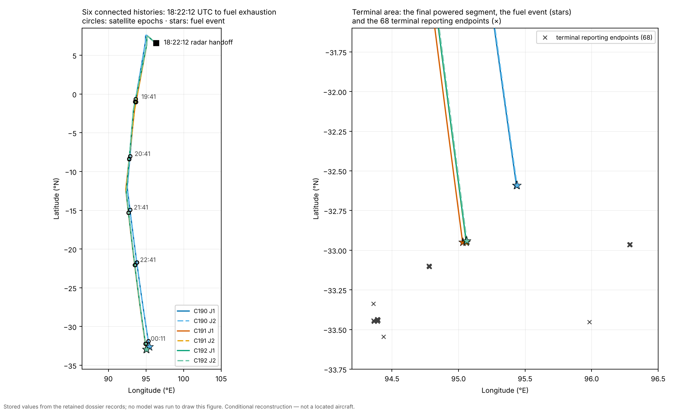
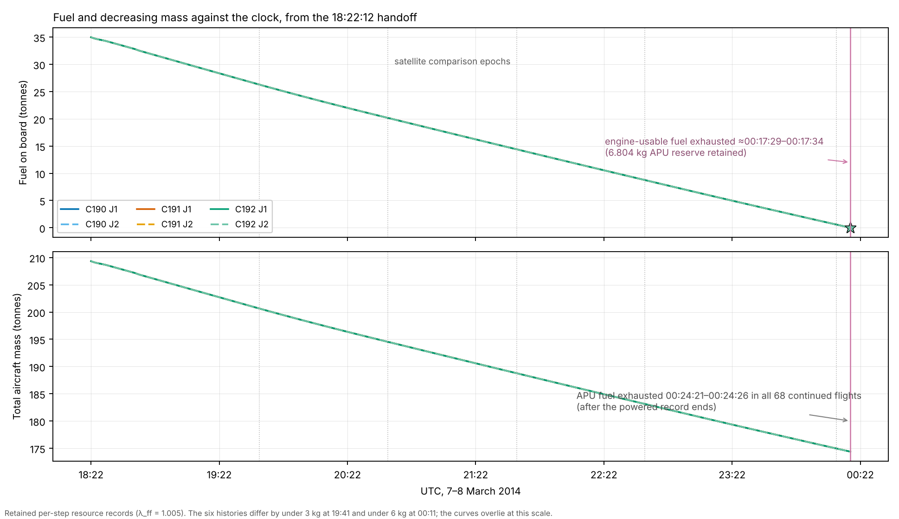
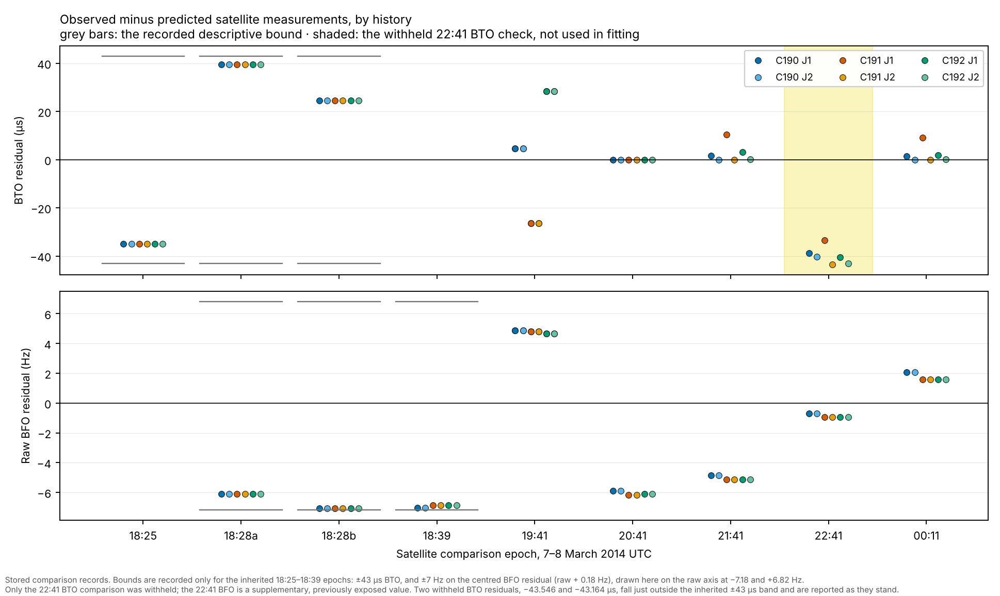
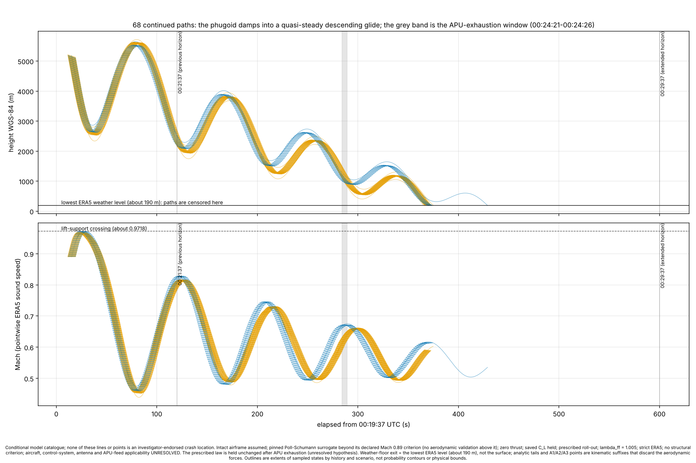
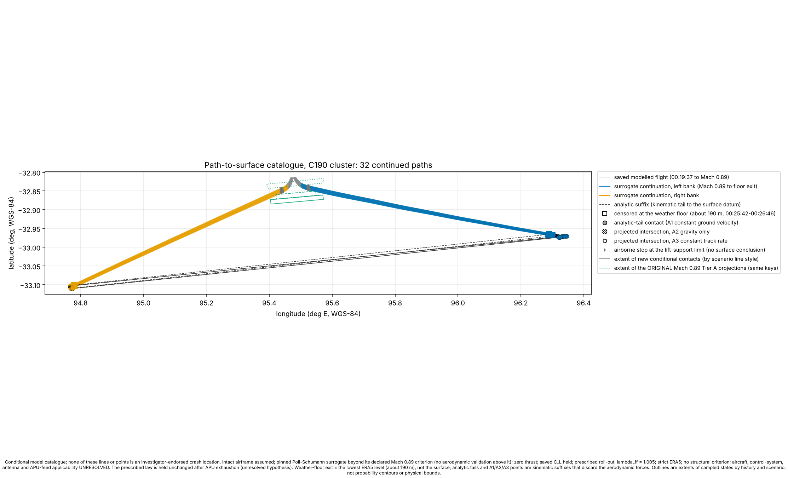
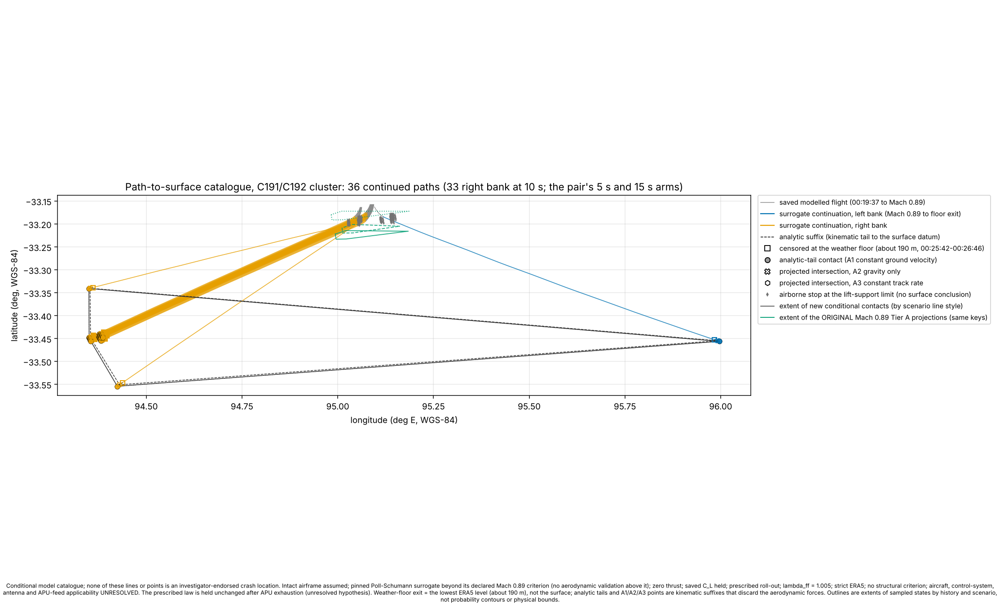
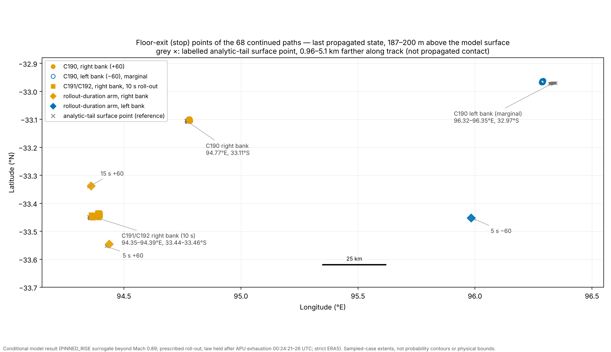

Six connected incoming flight histories with multiple conditional terminal continuations, beginning at the reconstructed primary-radar handoff. The floor-ending continuations reach the altitude where the weather record ends; others stop at an earlier model-support boundary. Every number and figure on this page comes from the retained records; nothing is recomputed here. The six histories are those retained under the project's declared selection and checking rules, not every flight that could satisfy the measurements. The complete dataset, with an exporter that reproduces any registered flight as one chronological table, is identified at the foot of the page.
Later experiments, including the 11 and 12 November speed-and-climb runs and the lower-speed run that reaches 29.88°S, are separate from this six-history dossier and are reported in the experiment record.
All six histories begin at the retained 18:22:12 UTC radar handoff with 34,962.864 kg of fuel aboard a 209,331.864 kg aircraft (fuel-flow multiplier λff = 1.005). The early sequence is shared:
| UTC, 7 March | What the aircraft does |
|---|---|
| 18:22:12–18:23:12 | Course establishment from ≈270° to 311° |
| 18:32:12–18:35:07 / 18:34:12–18:37:07 | South turn from 311° to 180° (C191/C192 timing / C190 timing) |
| 18:42:12–18:42:42 | Course refinement to 190°, 191° or 192° |
| 18:42:12–18:44:52 | Mach command ramp 0.67 → 0.75 |
| 18:44:12 | Pressure hold begins at ≈331.66 hPa |
| 19:46:03–19:51:03 | First downstream turn (five minutes, all histories) |
Clock conventions: upstream elapsed time starts at 18:22:12; downstream and terminal elapsed time starts at 19:41:03 (downstream = upstream − 4,731 s). The final transmissions sit at 00:19:29 and 00:19:37 UTC on 8 March.
| History | Second turn starts (7 Mar UTC) | Fuel at 19:41, kg | Fuel at 00:11, kg | Engine-fuel event (8 Mar UTC) | Terminal-endpoint branches |
|---|---|---|---|---|---|
| C190 J1 | 21:13:24.7 | 26,265.02 | 580.31 | 00:17:28.79 | 16 |
| C190 J2 | 21:13:14.4 | 26,265.02 | 580.31 | 00:17:28.80 | 16 |
| C191 J1 | 21:12:40.5 | 26,263.56 | 586.17 | 00:17:33.71 | 8 |
| C191 J2 | 21:11:38.9 | 26,263.56 | 586.33 | 00:17:33.83 | 12 |
| C192 J1 | 21:16:00.9 | 26,262.65 | 585.06 | 00:17:32.95 | 8 |
| C192 J2 | 21:15:40.5 | 26,262.65 | 585.13 | 00:17:33.00 | 8 |
At the engine-usable-fuel event each history retains the 6.804 kg modelled APU reserve (total mass 174,375.804 kg); the saved aggregate fuel flow there is 1.466–1.468 kg/s. Values rounded for reading; the dataset retains full precision. The table of all 424 registered continuation candidates — history, bank, response delay, control law, drag formulation, first event — is REGISTER.csv in the terminal catalogue.
The six histories were selected for fuel exhaustion near the log-on. This timing agreement is a selection condition, not an independent validation.
The earlier panel described this timing as an independent check and stated that the model had been given no information about it. That interpretation is withdrawn; the retained times below are unchanged.
The six histories exhaust their engine-usable fuel at 00:17:28.8 to 00:17:33.8 UTC, between 1 min 55 s and 2 min 00 s before the satellite terminal's log-on request at 00:19:29.
| History | Engine-usable fuel exhausted | Interval to the 00:19:29 log-on request |
|---|---|---|
| C190 J1 | 00:17:28.791 | 2 min 00 s |
| C190 J2 | 00:17:28.798 | 2 min 00 s |
| C191 J1 | 00:17:33.710 | 1 min 55 s |
| C191 J2 | 00:17:33.833 | 1 min 55 s |
| C192 J1 | 00:17:32.951 | 1 min 56 s |
| C192 J2 | 00:17:33.003 | 1 min 56 s |
How that timing arose. With the fuel model as built (multiplier 1.0), these same histories run out of fuel 113–118 s too late for the log-on, assuming 60 s for the APU to start and 60 s for the terminal to come up. Raising the fuel flow by half a percent (multiplier 1.005) moves the event about 110 s earlier and brings it to within −0.2 to +4.8 s. The terminal stage was then run on those six fuel-event states; its method records that it was designed after inspecting those results and that the 1.005 multiplier is a diagnostic scenario with no independent calibration.
What follows. Of 24 candidate histories that satisfied the satellite comparisons, 18 were left out of the terminal stage by this timing condition, not by their satellite residuals. Under a 90 s + 90 s assumption a different speed family would have met it. The terminal geography on this page is therefore the geography of one family under one fuel-flow value and one readiness assumption. The full record is in the coverage audit.
The campaign did not simulate every feasible flight; no finite run can. It swept a declared grid stage by stage. An audit of every swept quantity gives:
| Where the retained flights sit | Quantities | Which |
|---|---|---|
| Closed: inside the swept range, rejected values on both sides | 4 | Course after 18:42 (1° steps); first-turn and second-turn course changes; terminal onset delay (102–115 s inside 90–135 s) |
| At an edge, selected, coarse or not continued | 13 | Pressure target (238 hPa, top of range); climb parameter (150 ft/min, bottom); early Mach target (0.65–0.67, bottom of 0.65–0.80); turn-south start (480 s, bottom); later Mach (0.67, bottom); fuel-flow multiplier (1.005, top); the 10° turn-south course grid; the 18 candidates and 332 lift-boundary stops not carried further |
| Never varied | 6 | The 18:22:12 handoff state, and with it the turn near Penang; the 18:42:12 intervention time; the first-turn timing; the 60° bank magnitude; the lift law; the 60 s + 60 s readiness interval |
Where retained flights sit at the edge of a range, the envelope has not been shown to end there. "The envelope" on this site means the envelope of this grid under these selections. All 23 rows.

Left: the six histories from the radar handoff at 6.578°N, 96.341°E, through the turns and the satellite comparison epochs, to the engine-fuel event near 32.6–33.0°S. Right: the final powered segment (roughly the last 9–12 minutes) and the 68 terminal reporting endpoints. Every plotted value is a stored record; no model was run to draw it.

Fuel and decreasing mass from 34,962.864 kg and 209,331.864 kg at the handoff to the engine-usable-fuel event at 00:17:29–00:17:34, where 6.804 kg of modelled APU reserve remains. The six curves differ by under 3 kg at 19:41 and by about 6 kg at 00:11, so they overlie at this scale — the histories differ in geometry, not in fuel state.

Observed minus predicted, epoch by epoch, with each epoch's role as recorded: 18:25–18:39 and 19:41 are inherited components carried from upstream; the 20:41 BTO belongs to the first-turn adjustment; the 21:41 and 00:11 BTO belong to the second-turn adjustments, which is why those residuals sit near zero. The 22:41 BTO comparison was withheld — never used in fitting — and is shaded: two of its six residuals, C191 J2 at −43.546 µs and C192 J2 at −43.164 µs, fall just outside the inherited descriptive ±43 µs band and are reported as they stand, not adjusted. The 22:41 BFO is a supplementary, previously exposed value, not a withheld one. The ±7 Hz BFO band applies to the centred residual (raw + 0.18 Hz), so on the raw axis shown it runs from −7.18 to +6.82 Hz.
From the saved states at Mach 0.89 — the declared aerodynamic-validation boundary of the performance surrogate, and the handoff point at which each continuation is saved — every registered arm is carried forward under its unchanged control law. Three outcomes follow, and they are different events:
| Arms | Outcome | Where it happens |
|---|---|---|
| 332 | Stop at the lift-support boundary (CL_MODEL_SUPPORT): the surrogate's lift-limit fit meets the commanded lift coefficient | Mach 0.9718, at 00:19:55–00:20:06 UTC, at approximately 3.37–3.92 km WGS-84 height. A model-domain marker, not an aircraft limit and not stall or breakup. |
| 68 | Glide on past the high-speed descent and reach the terminal reporting endpoint | They approach the same boundary (peak Mach 0.9671–0.9717 before 00:21:37) without crossing it. |
| 24 | Exploratory command alternatives, held at their saved Mach 0.89 endpoints by design | Registered exploratory alternatives, not continued beyond their saved Mach 0.89 endpoints. |
In the 68 that glide on, the pitch oscillation damps over about four cycles into a quasi-steady glide, and the sampled maximum after 00:21:37 is only Mach 0.814–0.828 — the lift-support boundary is never again approached. APU fuel is exhausted at 00:24:21–00:24:26 in all 68. Every gliding flight then leaves the lowest level of the weather record between 00:25:41 and 00:26:46 UTC, descending at 8.9–44 m/s at ground speed 179–209 m/s.

That last computed state is the terminal reporting endpoint: 187–200 m WGS-84 ellipsoidal height, which is 218–226 m above the native model surface. A separately labelled constant-velocity projection carries each flight the remaining 0.96–5.1 km to that surface (00:25:47–00:26:53 UTC); it is a kinematic suffix, never a computed contact, and two alternative projections land within 0.3–3.9 km of it.
Terminal reporting endpoints — the last computed states — with the separately labelled analytic surface projection alongside. The two sets of coordinates are different quantities and are kept in different columns.
| Group | n | Reporting-endpoint latitude | Reporting-endpoint longitude | Track | Projected surface position (A1) |
|---|---|---|---|---|---|
| C190, right bank, 10 s | 16 | 33.099–33.106°S | 94.7768–94.7834°E | 245° | 33.103–33.110°S, 94.766–94.773°E |
| C190, left bank, 10 s marginal | 16 | 32.962–32.968°S | 96.2847–96.2920°E | 100° | 32.970–32.973°S, 96.319–96.346°E |
| C191/C192, right bank, 10 s | 33 | 33.436–33.451°S | 94.3620–94.3976°E | 245° | 33.440–33.456°S, 94.351–94.387°E |
| C191 J2, right bank, 15 s roll-out | 1 | 33.339°S | 94.3603°E | 256° | 33.341°S, 94.350°E |
| C191 J2, right bank, 5 s roll-out | 1 | 33.546°S | 94.4378°E | 235° | 33.554°S, 94.424°E |
| C191 J2, left bank, 5 s roll-out | 1 | 33.453°S | 95.9842°E | 109° (eastward) | 33.456°S, 95.997°E |
The 16 left-bank C190 flights are flagged marginal: they clear the lift-support boundary by 0.0001–0.0008 in Mach — less than the measured roll-out-duration effect — so the eastern lobes are not robust. The three roll-out–duration arms are listed separately because they do not share a direction: two run west-southwest and one runs east. Extents are the spread of the sampled cases, not bounds.



32.355°S, 97.4°E — proposed location; originating run and evaluation status awaiting verification. No verified run, source artifact or residual table has been located for this point; it is recorded as a point only, with no footprint, attributed to none of the six histories. Two frozen-method experiments (a target-conditioned feasibility test and a location-unconstrained reconstruction) are planned; this page does not change until their results are reviewed.
The complete dataset is a 249 MB archive, kept outside this repository and identified by checksum:
MH370_Flight_Histories_Data.zip · 249,256,676 bytes · SHA-256 3d3e5c3e0a4768c29abbed5baa3720cdf58fd0317a2420c068558a69eb8fe0ed
Independently audited 10 Nov 2026: all 274 manifest entries and 101 table inventories verify; both prescribed sample exports reproduce exactly; 1,624/1,624 internal joins have identical times and positions (98 powered-to-onset comparisons bitwise on the compared fields; 112 joins differ only at the last floating-point bit in velocity or lift-vector components). Read the independent audit record. A public download link will be added when the hosting location is established.
The included reader joins a parent history to its terminal branch and writes one chronological record — position, height, Mach, speeds, track, fuel, mass, atmosphere, satellite comparisons — with every original column and its source labelled:
python tools/export_flight.py --root . list
python tools/export_flight.py --root . export \
--branch "TB|PRODUCTION|U_T0720_M0.75_C190_TM0.67_J1|+60|108|ROLLOUT_10S|PINNED_RISE|NOMINAL" \
--out exports/C190_J1_right_108_roll10_pinned.csv.gzThat example reproduces 5,605 rows and 117 columns from 18:22:12.000000 to 00:25:43.160210 UTC. The exporter reproduces the retained records; it does not rerun the aircraft, atmosphere or satellite calculations. Where a calculation can also be rerun from pinned code and inputs, the repository's run directories say so, with expected results.
Terminal catalogue — findings, frozen method and continuation outcomes (commit 95d1b5a); Tier B population; second-turn joint refinement (J1/J2) — each with its frozen method, control gates, half-step checks and findings. Search-coverage statements use only the verified overlay fields; no location is called searched or cleared from an outline, review circle or unavailable raster.